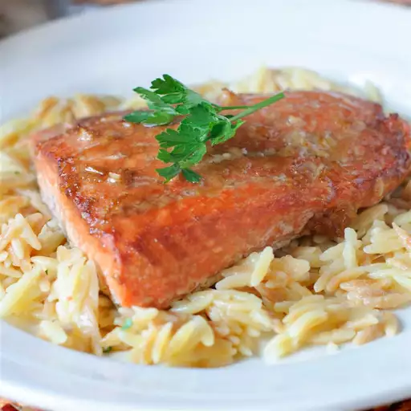

Grilled Salmon

Grilled salmon is salmon that has been cooked over coals or a gas flame and is one of the oldest fish preparations known.
Although salmon has a strong and distinct flavor, many recipes for grilled salmon use a brief marinade beforehand to help accent the taste of the fish.
The cooking times and styles vary depending on the cut, with the use of the whole fish involving a completely different method altogether.
Ingredients
- 4 (4 ounce) fillets salmon
- ¼ cup peanut oil
- 2 tablespoons soy sauce
- 2 tablespoons balsamic vinegar
- 2 tablespoons thinly sliced green onion
- 1 ½ teaspoons brown sugar
- 1 clove garlic, minced
- ¾ teaspoon ground ginger
- ½ teaspoon crushed red pepper flakes
- ½ teaspoon sesame oil
- ⅛ teaspoon salt
Steps
- Whisk together peanut oil, soy sauce, balsamic vinegar, green onions, garlic, brown sugar, ginger, red chile flakes, sesame oil, and salt.
Place fish in a glass dish, and pour marinade over all. Cover with plastic wrap, and refrigerate for 4 to 6 hours.
- Preheat barbecue or gas grill.
- Oil the grill rack, and adjust height to 5 inches from coals. Remove salmon from marinade, and place on grill.
Grill for 10 minutes per inch of thickness, measured at thickest part, or until fish just flakes when tested with a fork. Turn halfway through cooking.